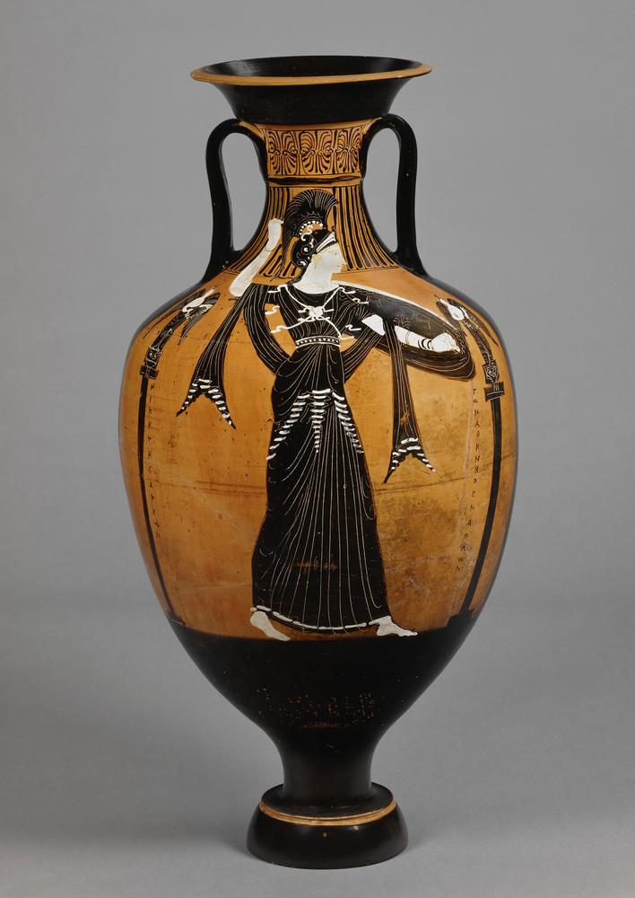
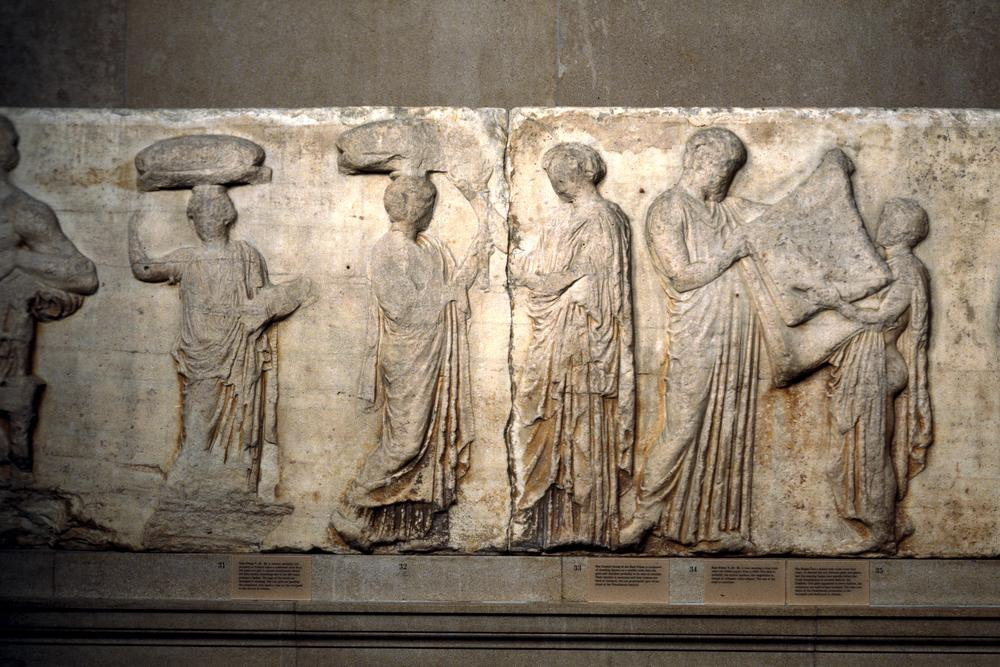
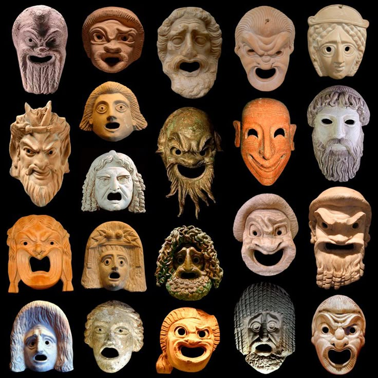
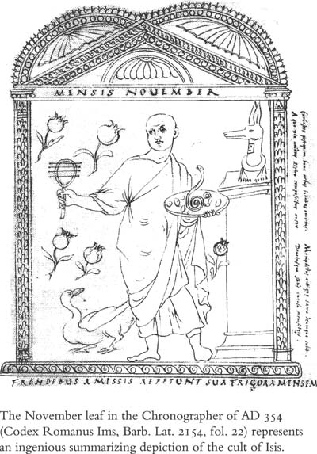
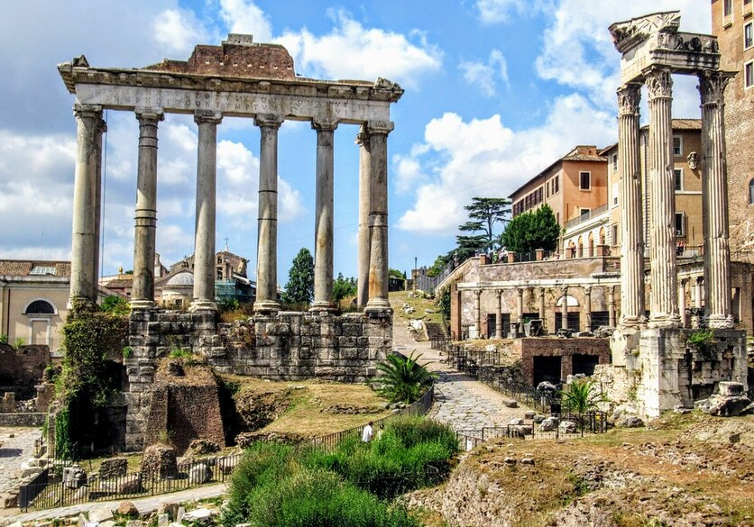

Greece and Rome — the Great Panathenaia, the City Dionysia, the Lupercalia, and the Saturnalia
Greece
The Great Panathenaia
The Great Panathenaiaheld every four years · eight days · in honour of Athenaview amphora

Panathenaic prize amphora · Athena on one side, the event on the other
founded by Theseus as an annual festival; expanded to eight days every four years from 566 BC
only Athenians and resident foreigners could take part — not a pan-Hellenic event
celebrated Athena's birthday — the most important religious occasion in the Athenian year
prizes were Panathenaic amphorae — jars filled with expensive olive oil; one side showed Athena, the other the event; the prizes themselves were religious objects
The programmeeight days
Day 1: rhapsodic and musical contests — rhapsodes recited Homer's Iliad and Odyssey from memory; four musical contests using the aulos (double flute) and kithara (harp-like instrument)
Days 2–3: athletics — boys, youths, and men; women could not compete
Day 4: equestrian events — four-horse chariot race; mounted javelin contest; the apobates (see below)
Day 5: tribal contests — strength trials, boat race at Piraeus, war dance, torch race
Day 6: all-night celebration, procession, and sacrifice — the most important day
Day 7: apobates and boat race
Day 8: prize-giving
Athletic events
stadion — a running race the length of the stadium
wrestling — three falls to win; competitors covered in oil; no biting, kicking, or punching; Theseus believed to have invented it after defeating Cercyon
boxing — leather strips on knuckles to protect the athlete's own hands; blows aimed at the head; no protective headgear; one of the most dangerous events
pankration — boxing and wrestling combined with kicking; only two rules: no eye gouging and no biting
pentathlon — discus, javelin, long jump, stadion, and wrestling; if an athlete won the first three, the last two did not take place
The apobates
the greatest equestrian event — fully armoured charioteers dismounted while racing, ran alongside the chariot for a period, then remounted
unusually, the prize went to the owner of the horses, not the rider
what it tells us: only the wealthiest Athenians could afford to keep racing horses — the apobates let the elite display their wealth as civic glory while the actual physical risk was taken by a hired driver
The torch race
a two-mile run from the Dipylon Gate to the altar on the Acropolis, each competitor carrying a lit torch
the winner's torch was used to light the sacrificial flame the next day — a great honour for the winner and glory for their tribe
The peplos
a Greek dress woven in yellow and purple cloth; scenes of the battle between gods and giants stitched in saffron thread
two were made in the mid-fifth century: the smaller presented to the wooden statue of Athena in the Erechtheion; the larger used as a sail on a ceremonial boat pushed to the Acropolis
the larger peplos was then carried up into the Acropolis and presented to Athena
what it tells us: the peplos took years of labour by Athenian women and was the centre of the procession — gift-giving on this scale shows the festival was an act of the whole city, not just its priests
The processionview frieze

Parthenon Ionic frieze · the Panathenaic procession
began at the Dipylon Gate, travelled along the Panathenaic Way, ended at the altar of Athena Polias between the Parthenon and the Erechtheion
depicted on the Ionic frieze of the Parthenon — starting with cavalrymen at the west end, following two routes north and south around the building
The sacrifice
only Athenians were allowed on the Acropolis — a strong sense of civic belonging
up to one hundred oxen sacrificed — a hecatomb; no expense spared
the Priestess of Athena and prominent Athenians feasted first; then the rest of the community received the meat
the Panathenaic procession is depicted on the Ionic frieze of the Parthenon — a key visual source for the festival
The Great Panathenaia was as much a celebration of Athens as of Athena. The rhapsodic contests celebrated Homer; the athletics displayed Athenian physical excellence; the tribal contests reinforced democratic structure. The peplos — woven over years by Athenian women — was a unique act of collective devotion. The procession depicted on the Parthenon made all of this permanent in marble. Every element of the festival showed Athens at its best, with Athena at the centre as the reason for it.
Exam focus
Describe the programme of the Great Panathenaia.
What was the peplos, and how was it presented to Athena?
How did the Great Panathenaia show off the city of Athens?
'The Great Panathenaia was more a celebration of Athens than of Athena.' How far do you agree?
Greece
The City Dionysia
The City Dionysiafounded sixth century BC · five days · mid-March · in honour of Dionysusview theatre
The Theatre of Dionysus · south slope of the Acropolis
founded when the alliance between Eleutherae and Athens coincided with the arrival of a wooden statue of Dionysus in the city
the Athenians initially rejected the statue; a plague affecting men's genitals followed; they accepted Dionysus and initiated the festival — and the plague stopped
held in spring because Dionysus was associated with rebirth; honoured through theatre — his favoured medium
took place in the sanctuary of Dionysus on the south side of the Acropolis — temple in the north-west corner, altar at the centre of a large open area
Officials
the eponymous archon — an elected official whose name gave the civil year its title; he selected three tragic and five comic playwrights and chose a choregos for each set of plays
the choregos was a wealthy citizen who financed the production — a mark of status and a significant financial commitment
attending the theatre cost two obals (roughly a day's wage for an unskilled worker); the Theoric Fund was set up in the late fifth century BC to help the poor attend
Participants
the dithyramb competition saw 100 members from each of Athens's ten tribes take part in a choral dance in honour of Dionysus — 1,000 amateurs took part each year
theatrical participants were divided into professional actors and amateur chorus members drawn from the citizen body
the Theoric Fund ensured the festival was open to all Athenians regardless of wealth
The programmefive days
Day 1: the pompé (grand procession) — the wooden statue of Dionysus carried on a boat on wheels from the city gates to the sanctuary; drinking, dancing, and revelry; participants carried model phalluses in recognition of Dionysus's fertility; the dithyramb competition followed; in the evening the komos — men only, singing, wine, leather phalluses presented to the god
Day 2: opening ceremony — the priest of Dionysus sacrificed a piglet; each of the ten generals poured a libation to the twelve Olympians; then five comedies
Days 3–5: one playwright per day — three tragedies and one satyr-play; judging and prize-giving on day five
Comedyview masks

Greek theatre masks — tragic and comic
developed later than tragedy; reflected the political freedom of fifth-century Athens
themes: war, politics, social life; characters often had reversed roles — slaves superior to masters, women controlling men, politicians openly mocked
offered relief from everyday life and a platform for political comment
only eleven plays by one comic playwright survive — Aristophanes (446–386 BC)
Tragedy
performed as a trilogy plus a satyr-play — one playwright per day; three days for tragedy vs one for comedy shows the emphasis on tragedy at the festival
inspired by mythic and historical events; focused on human suffering; asked: what makes a man great? what causes suffering? can man control his own fate?
three great tragic playwrights: Aeschylus (525–456 BC), Sophocles (497–406 BC), Euripides (480–406 BC)
The satyr-play
provided comic relief between or after the tragedies
mythological in theme but unrelated to the main trilogy
featured satyrs (half-man, half-goat companions of Dionysus) as the chorus
what it tells us: the satyr-play returned the audience to Dionysus directly — after a day of human suffering, the god's own companions reminded the audience whose festival they were attending
Judging
ten judges each wrote the plays in order of preference and placed their list in an urn
the eponymous archon drew five of the ten lists; the playwright with the most votes won
the victor received a garland of ivy — a symbol of Dionysus
what it tells us: drawing only five of ten lists at random mirrored Athenian democratic practice — the same use of lot that decided political office decided the winning play, making the judgment a civic act as well as an artistic one
The City Dionysia was the most culturally ambitious festival in the ancient world. In five days it encompassed religious procession, fertility ritual, political satire, and some of the greatest dramatic writing in human history. Tragedy was not simply entertainment — it was a civic act; the audience sat together as Athenians and watched stories that asked the hardest questions about human life. The 1,000 amateurs in the dithyramb, the Theoric Fund for the poor, the elected archon overseeing proceedings — all of it made the Dionysia as democratic as it was religious.
Exam focus
Describe what happened on each day of the City Dionysia.
What was the difference between tragedy and comedy at the City Dionysia?
How inclusive was the City Dionysia? Give specific evidence.
How did the events of the City Dionysia honour Dionysus?
Rome
The Lupercalia
The Lupercalia15th February · annual · in honour of Lupercus
a festival of fertility and purification in honour of Lupercus — a god whose name derives from lupus (wolf)
also honoured Rome's founder Romulus — who as first king was known as the King of the Shepherds; as Rome became less agricultural, the festival became more associated with Romulus than with shepherding
the origins were debated even in antiquity: Plutarch linked it to the Arcadian festival of Lycaea (feast of wolves); Ovid linked it to the Greek god Pan; neither is definitive
The Lupercalview she-wolf
The Capitoline She-Wolf with Romulus & Remus
the festival began at the Lupercal — a cave in the Palatine Hill believed to be where Romulus and Remus were suckled by the she-wolf
Dionysius of Halicarnassus described it: a large cave overarched by dense wood; deep springs beneath the rocks; a glen shaded by thick trees; an altar to Lupercus inside
the Romans continued to offer the traditional sacrifice there without alteration — Dionysius noted this continuity explicitly
Officials
the priests were called the Luperci — chosen for the day from the noble male population
divided into two teams for the sacrifice and the race
The sacrifice
dogs and goats sacrificed — chosen for their virility, appropriate for a fertility god
mola salsa sprinkled on the animals' heads; once they bowed in acceptance, their throats were slit
a knife was dipped in the blood and dripped onto the foreheads of the Luperci; immediately wiped off with wool soaked in milk; the Luperci were then expected to laugh
a haruspex read the entrails; if positive, the participants ate the meat and drank large amounts of wine
the animal skins were cut into strips — used during the race
what it tells us: blood, milk, and laughter together stage a symbolic rebirth — the Luperci pass through death and emerge renewed, fit to carry the god's fertility out into the city
The race
the Luperci ran naked around the foot of the Palatine Hill — Ovid explains: the god loves to run naked and orders his servants to do the same; clothes were not suited to the course
part of the route passed through the Roman Forum — the centre of business and politics
as they ran, the Luperci whipped spectators with the leather strips
Plutarch records that women of rank deliberately placed themselves in the runners' way, believing that being struck would help pregnant women to an easy delivery and barren women to conceive
the festival was largely restricted to noble male Luperci as active participants — the wider public were spectators
The Lupercalia looks nothing like the ordered, hierarchical religious events of the pontifices — and that is the point. It was ancient, pre-urban, rooted in Rome's pastoral origins before the city existed. A cave on the Palatine, naked runners, blood smeared on foreheads — these rituals survived for centuries because Romans valued continuity with their past, even a past that looked like magic rather than religion. Its connection to both Lupercus and Romulus gave it a dual significance: fertility for the present, and a living link to Rome's founding myth.
Exam focus
Describe what happened at the Lupercalia from start to finish.
What animals were sacrificed at the Lupercalia, and why were they chosen?
What was the purpose of the race, and why did the runners whip spectators?
How did the Lupercalia honour both Lupercus and Romulus?
Rome
The Saturnalia
The Saturnalia17–23 December · in honour of Saturn
held in honour of Saturn, Roman god of sowing and the seed
celebrated three things: the end of the winter sowing; the Winter Solstice and the coming of new light; the memory of the Golden Age — when Saturn ruled the earth and gods and men lived together as equals
the festival brought hope of a return to the Golden Age
considered unique among Roman festivals — men, women, children, and slaves all participated
duration varied: shortened to three days under Augustus; extended to five days under Claudius (AD 41–54)
remained popular until the fourth century AD, when it was incorporated into the Christian celebration of Christmas
The Calendar of Philocalusfourth-century AD calendar · surviving in a seventeenth-century copyview calendar

Calendar of Philocalus · the December page
the December page shows: a mask (suggesting theatre, though no evidence of performances exists); a table with dice and a dice tower (gambling was permitted); birds hanging from a hook; a torch
inscription: "I grant the subjects of the month of December to you"
vertical inscription: "Now, slave, you are allowed to play with your master" — explicitly acknowledging the inversion of hierarchy
one of our best visual sources for the Saturnalia — use it in answers about what happened at the festival and Roman attitudes to social hierarchy
Officialsview temple

Temple of Saturn · Roman Forum
the priests of the Temple of Saturn in the Roman Forum provided the religious officials — the temple was dedicated during the Saturnalia in 497 BC
responsibility for the public feast fell to the Senate; state money paid for it
The sacrifice
took place on the first day
the priest sacrificed with his head uncovered — in the Greek style, departing from normal Roman practice
this alluded to the relationship between Saturn and Cronus, the Greek father of Zeus
The public feast
after the sacrifice the state paid for a public feast throughout the streets of Rome
a statue of Saturn sat at the banquet table to signify the god's presence
lasted several days; open to all levels of society
what it tells us: the Senate paying for a feast open to all citizens turned the Golden Age myth into state policy — equality was not just performed at home but funded in public
Private feasting and gift-giving
masters removed their togas; all wore party dress; men wore a small felt cap called a pilius as a symbol of freedom
masters served their slaves dinner first before eating themselves — Macrobius records this as proper religious usage
gift-giving was central — Romans gave numerous and varied gifts across all social levels
gambling with dice was permitted — normally restricted
Macrobius (fifth century AD) records the tradition of masters serving slaves in his work also called the Saturnalia
The Saturnalia was the most socially radical festival in the Roman calendar. In a society built on rigid hierarchy, a festival that required masters to serve their slaves was genuinely extraordinary — and it was sanctioned by the Senate and paid for by the state. The Romans understood that a controlled, temporary inversion of the social order released pressure without threatening it. The festival's incorporation into Christmas is the clearest measure of how deeply embedded it was in the rhythm of December life.
Exam focus
Describe what happened at the Saturnalia.
Why was the Saturnalia considered unique among Roman festivals?
What was the significance of the priest sacrificing with his head uncovered?
What can we learn about the Saturnalia from the Calendar of Philocalus?
Greece & Rome
The festivals compared
Similarities
all four festivals included a procession — the pompé, the Panathenaic procession, the Luperci gathering at the cave, the public feast through the streets
all four included sacrifice as a central religious act
all four were connected to a founding myth or divine origin — Theseus/Athena; Dionysus/Eleutherae; Romulus/the she-wolf; Saturn/the Golden Age
both Greek festivals and the Saturnalia used their festivals to display civic identity
both cultures dedicated a significant proportion of the year to festivals — Athens around 140 days, Rome around 159 days
Key differences
Inclusivity: the Saturnalia included men, women, children, and slaves as equals; the Panathenaia excluded women from sporting events and non-Athenians from most events; the Lupercalia restricted active participation to noble male Luperci
Theatre: the City Dionysia placed dramatic performance at the centre — nothing equivalent existed in either Roman festival
Social inversion: the Saturnalia uniquely inverted the social hierarchy — masters served slaves; no Greek festival did anything comparable
Sacrifice: the Lupercalia sacrificed dogs — unusual in the ancient world; the Panathenaia sacrificed up to 100 oxen; the Saturnalia priest sacrificed with head uncovered in the Greek style
Officials: the Dionysia used a democratically elected archon; the Lupercalia used noble Luperci chosen for the day; the Saturnalia used the priests of Saturn's temple with the Senate funding the feast
The sharpest contrast is between the City Dionysia and the Lupercalia. One was a five-day celebration of theatrical culture, democratic organisation, and civic pride. The other was a fertility ritual involving naked running and women seeking to be whipped. Both were taken equally seriously as religious obligations. This shows the range of what "festival" meant — from high culture to ancient magic — and how both traditions coexisted in the same civilisation.
Exam focus
Give two similarities between Greek and Roman festivals.
Give two differences between Greek and Roman festivals.
How did officials differ between the four festivals?
How did sacrifice differ between the four festivals?
Greece & Rome
Which was the more important festival — the Great Panathenaia or the City Dionysia?
The case for the Great Panathenaia
the Panathenaia was the most important religious event in the Athenian calendar — it celebrated Athena's birthday, the birthday of Athens's own patron goddess
the peplos — woven over years by Athenian women — was a unique act of collective devotion with no equivalent at the Dionysia
the hecatomb of up to 100 oxen was one of the most expensive sacrificial acts in the Greek world
the procession was depicted on the Ionic frieze of the Parthenon — making the act of worship permanent in marble
Panathenaic amphorae spread Athena's image and Athens's prestige across the Greek world
The case for the City Dionysia
the Dionysia produced some of the greatest artistic achievements in human history — the tragedies of Aeschylus, Sophocles, and Euripides were written for this festival
more inclusive in active participation — 1,000 ordinary Athenians in the dithyramb each year; the Theoric Fund ensured even the poor could attend
comedy allowed political satire and social comment — giving the festival a role in democratic discourse the Panathenaia did not have
the eponymous archon and choregos system made it a civic institution as much as a religious one
The Great Panathenaia was the more important festival to Athens as a city — it honoured the patron goddess with the grandest sacrifice, the most elaborate procession, and the unique gift of the peplos. The City Dionysia was the more important festival to the world — its cultural legacy has lasted longer and reached further than any athletic competition or religious procession. The fact that we still perform Sophocles and Aristophanes and that no Panathenaic athletic record survives tells you where the lasting importance lay.
Exam focus
Which was the more important festival — the Great Panathenaia or the City Dionysia?
How did each festival honour its god? Which did so more effectively?
Which do you think the Athenians would have enjoyed more? Justify your answer.
'The Great Panathenaia was more a celebration of Athens than of Athena.' How far do you agree?
Greece & Rome
Which was the more inclusive festival — the Lupercalia or the Saturnalia?
The case for the Lupercalia
the public race through the Roman Forum brought the festival to the whole city — a spectacle open to all
women of rank deliberately placed themselves in the runners' way to receive the fertility blessing — they were active participants, not passive spectators
the festival connected all Romans to their founding myth — the Lupercal cave and the she-wolf belonged to every Roman, not just the elite
The case for the Saturnalia
explicitly designed to include everyone — men, women, children, and slaves participated as equals
masters served their slaves dinner first before eating themselves
the public feast was paid for by the Senate and open to all citizens regardless of wealth
gift-giving was universal across all social levels
the pilius worn by all was a symbol of freedom — for slaves, a genuine if temporary experience of something normally denied
the Calendar of Philocalus confirms: "Now, slave, you are allowed to play with your master"
The Saturnalia was significantly more inclusive. It is the only festival in the ancient world where slaves actively participated on equal terms with their masters — and this was state-sanctioned, Senate-funded, and publicly acknowledged. The Lupercalia was visible to all but its active core was restricted to noble men. Spectating is not the same as participating.
Exam focus
Which was the more inclusive festival — the Lupercalia or the Saturnalia? Use specific evidence.
How did the Saturnalia promote equality? Give three specific examples.
How did the Lupercalia involve the wider Roman public?
'The Saturnalia was a more inclusive festival than the Lupercalia.' How far do you agree?
Greece & Rome
Which city honoured its gods better through festivals?
The case for Greece
around 140 festival days per year in Athens — an extraordinary civic commitment to religious celebration
the peplos presented to Athena represented years of collective labour — a unique act of devotion with no Roman equivalent
the hecatomb of up to 100 oxen showed the scale of Athenian religious commitment
the City Dionysia honoured Dionysus through his own favoured medium — theatre; the worship was perfectly matched to the deity
the Parthenon frieze made the Panathenaic act of worship permanent in stone — Athena was honoured not just at the festival but in the architecture of her city
The case for Rome
around 159 festival days per year — more than Athens
Roman festivals were state institutions — the Senate funded the Saturnalia feast; the pontifices managed the religious calendar; the Vestals made the mola salsa; religion and state were inseparable
the Lupercalia had been celebrated for centuries without alteration — Dionysius of Halicarnassus noted this explicitly; continuity was itself a form of honour
the Saturnalia honoured Saturn's Golden Age by literally enacting it — masters serving slaves was a genuine recreation of the myth; no Greek festival enacted its myth so directly
Greece honoured its gods with more imagination and artistic devotion — the peplos, the theatre, the hecatomb were all perfectly tailored to their deities. Rome honoured its gods with more organisational commitment — 159 festival days, state funding, unbroken ritual continuity. Greek gods were honoured beautifully; Roman gods were honoured systematically. Both approaches worked. The difference is that Rome's approach left less to chance — the pax deorum was too important to be left to individual piety alone.
Exam focus
Which city honoured its gods better through festivals — Athens or Rome?
How did the Great Panathenaia honour Athena? How did the City Dionysia honour Dionysus?
How did the Lupercalia honour Lupercus and Romulus? How did the Saturnalia honour Saturn?
Give one similarity and one difference between how Greeks and Romans used festivals to honour their gods.
Flashcards
30 cards — click to flip, shuffle, or use ←/→ and Space